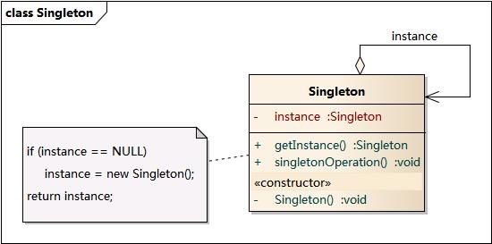

单例模式(Singleton Pattern)：单例模式确保某一个类只有一个实例，而且自行实例化并向整个系统提供这个实例，这个类称为单例类，它提供全局访问的方法。
单例模式的要点有三个：
- 是某个类只能有一个实例；
- 是它必须自行创建这个实例；
- 是它必须自行向整个系统提供这个实例。
单例模式是一种对象创建型模式。单例模式又名单件模式或单态模式。
单例模式结构
单例模式的目的是保证一个类仅有一个实例，并提供一个访问它的全局访问点。
单例模式包含的角色只有一个，就是单例类——Singleton。
单例类拥有一个私有构造函数，确保用户无法通过new关键字直接实例化它。
除此之外，该模式中包含一个静态私有成员变量与静态公有的工厂方法，该工厂方法负责检验实例的存在性并实例化自己，然后存储在静态成员变量中，以确保只有一个实例被创建。
在单例模式的实现过程中，需要注意如下三点：
- 单例类的构造函数为私有；
- 提供一个自身的静态私有成员变量；
- 提供一个公有的静态工厂方法。

常见的单例实现
饿汉模式
public class Singleton {
private static Singleton instance = new Singleton();
private Singleton (){
}
public static Singleton getInstance() {
return instance;
}
}
懒汉模式
public class Singleton {
private Singleton(){} // 私有构造
private static volatile Singleton instance = null; // 私有单例对象
// 静态工厂
public static Singleton getInstance(){
if (instance == null) { // 双重检测机制
synchronized (Singleton.class) { // 同步锁
if (instance == null) { // 双重检测机制
instance = new Singleton();
}
}
}
return instance;
}
}
静态内部类实现方式
/**
* 从外部无法访问静态内部类 LazyHolder，只有当调用 Singleton.getInstance() 方法的时候，才能得到单例对象 INSTANCE。
* INSTANCE 对象初始化的时机并不是在单例类 Singleton 被加载的时候，而是在调用 getInstance 方法，使得静态内部类 LazyHolder 被加载的时候。
* 这种实现方式是利用classloader的加载机制来实现懒加载，并保证构建单例的线程安全。
*/
public class Singleton {
private static class LazyHolder {
private static final Singleton INSTANCE = new Singleton();
}
private Singleton (){}
public static Singleton getInstance() {
return LazyHolder.INSTANCE;
}
}
使用容器实现
public class SingletonManager {
private static Map<String, Object> objMap = new HashMap<String,Object>();
private Singleton() {
}
public static void registerService(String key, Object instance) {
if (!objMap.containsKey(key) ) {
objMap.put(key, instance) ;
}
}
public static Object getService(String key) {
return objMap.get(key) ;
}
}
枚举实现
public enum Singleton {
INSTANCE;
public void doSomeThing() {
//做点什么
}
}
使用场景
系统只需要一个实例对象，如系统要求提供一个唯一的序列号生成器，或者需要考虑资源消耗太大而只允许创建一个对象。
客户调用类的单个实例只允许使用一个公共访问点，除了该公共访问点，不能通过其他途径访问该实例。
在一个系统中要求一个类只有一个实例时才应当使用单例模式。反过来，如果一个类可以有几个实例共存，就需要对单例模式进行改进，使之成为多例模式